Invariants¶
Determinant¶
Though there are many different possible definitions of the determinant of a matrix 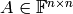, the simplest one is in terms of the product of the eigenvalues (including multiplicity):
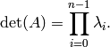
Since 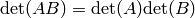, we can compute the
determinant of an arbitrary matrix in 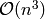 work by
computing its LU decomposition (with partial pivoting),  ,
recognizing that 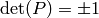
(the signature of the permutation), and computing
,
recognizing that 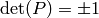
(the signature of the permutation), and computing
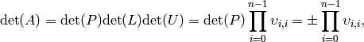
where 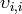 is the i’th diagonal entry of  .
.
Note
The following functions overwrite the input matrix with its LU factorization in order to efficiently compute the determinant.
- F Determinant(Matrix<F>& A)¶
Returns the determinant of the (fully populated) square matrix A, which is overwritten during the computation.
- F Determinant(DistMatrix<F>& A)¶
Same as above, but for a distributed matrix.
- type struct SafeProduct<F>¶
Represents the product of n values as 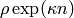, where 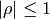 and 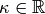.
- F rho¶
For nonzero values, rho is the modulus and lies on the unit circle; in order to represent a value that is precisely zero, rho is set to zero.
- typename Base<F>::type kappa¶
kappa can be an arbitrary real number.
- int n¶
The number of values in the product.
- SafeProduct<F> SafeDeterminant(Matrix<F>& A)¶
Returns the determinant of the square matrix A in an expanded form which is less likely to over/under-flow.
- SafeProduct<F> SafeDeterminant(DistMatrix<F>& A)¶
Same as above, but for a distributed matrix.
Trace¶
The two equally useful definitions of the trace of a square matrix are
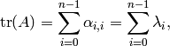
where 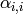 is the i’th diagonal entry of  and
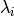 is the i’th eigenvalue (counting multiplicity) of .
and
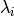 is the i’th eigenvalue (counting multiplicity) of .
Clearly the former equation is easier to compute, but the latter is an important characterization.
- F Trace(const Matrix<F>& A)¶
Return the trace of the square matrix A.
- F Trace(const DistMatrix<F>& A)¶
Same as above, but for a distributed matrix.